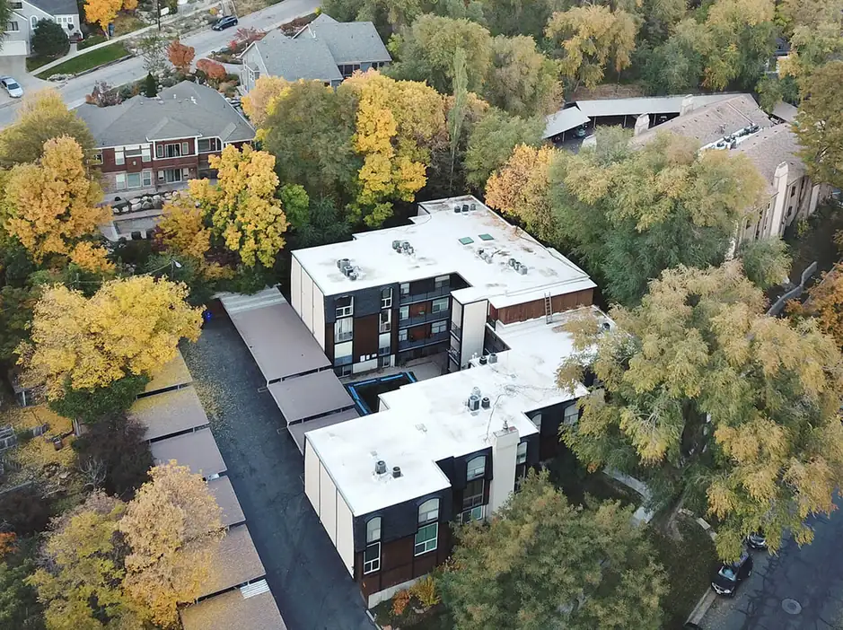
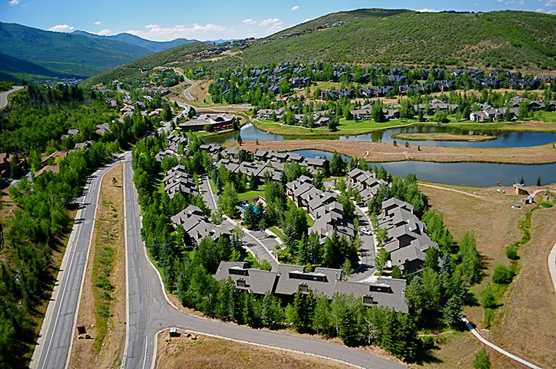
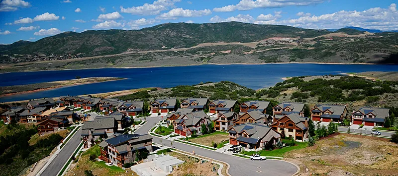
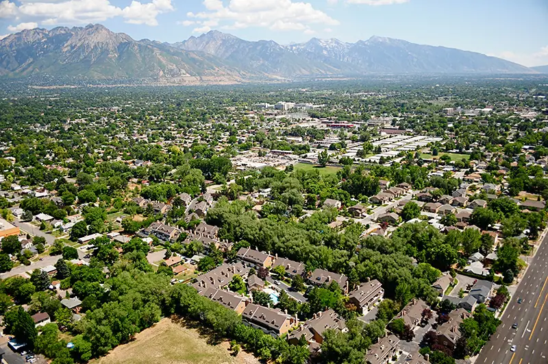

An aging or failing condo roof can mean recurring leaks, resident complaints, and growing repair costs across multiple units. American Roofing Company helps HOA boards, condo associations, and property managers determine whether repair or replacement makes the most sense. As a manufacturer-credentialed roofing contractor, we give trustworthy recommendations you can confidently bring to your decision-making team.
Condo Roof Replacement for Utah HOAs and Property Managers
Replacing a condo roof involves more than choosing materials. HOA boards, condo associations, and property managers must also consider budgets, scheduling, resident communication, and long-term protection.
American Roofing Company has served Utah property owners for more than 70 years. We can assess your roof and help determine whether targeted repairs or a full condo roof replacement is the better long-term solution.
With American Roofing Company, you can expect:
- Experienced recommendations: We evaluate the condition of your roof before recommending repair or replacement.
- Clear project scopes and estimates: Understand what the project involves and what you’re paying for before work begins.
- Certified roofing professionals: Work with an experienced condo roofing contractor committed to proper installation and quality workmanship.
- Resident-aware coordination: We plan for access, parking, staging, and other considerations that come with working in occupied condo communities.
- Warranty protection: New roof installations include American Roofing Company’s five-year labor and workmanship warranty.

Condo Roof Replacement Services
Condo communities can include pitched roofs, flat or low-slope sections, and other roofing components that require different materials and installation methods. American Roofing Company provides replacement for a variety of roofing systems and can recommend an approach based on the existing roof, building design, drainage needs, and project goals.
Our condo roofing systems and services include:
Not sure whether your property needs a full replacement or targeted repairs? We can inspect the roof, identify areas of concern, and help you determine the appropriate next step.
The Steps to Condo Roof Replacement
1. Roof Inspection and Documentation
We assess the existing roof, including leaks, drainage, materials, flashing, and penetrations, along with access or site conditions that could affect the project.
2. Replacement Recommendation and Scope
We explain whether replacement is recommended and provide a clear scope of work for budgeting, bid comparisons, and association approval.
3. Scheduling and Resident Coordination
We plan for access, parking, material staging, dumpsters, and building sequencing while helping management prepare residents for the work.
4. Tear-Off and Roof Preparation
When needed, we remove existing roofing materials and prepare the underlying roof deck for the new system.
5. Decking, Flashing, and Drainage Review
We address necessary decking issues and review flashing and drainage before installing the new roof.
6. New Roof System Installation
Our team installs the selected roofing system according to project specifications and applicable manufacturer requirements.
7. Cleanup, Final Inspection, and Warranty Documentation
We clean the work area, inspect the completed roof, and provide applicable warranty and project documentation.
Does Your Condo Roof Need Repair or Replacement?
Deciding between a repair and a full condo roof replacement depends on the condition, age, and performance of the existing roof. A professional inspection can help your HOA board or property manager determine the best long-term approach.
Repair may be enough when:
Leaks or damage are limited to one area
- A small section of shingles or flashing is damaged
- The roof is otherwise in good condition
- Storm damage is localized
- Flat or low-slope sections have an isolated issue
- Repairs have been infrequent and effective
- Decking and underlying components remain sound
Replacement may be the choice when:
- Leaks are affecting multiple units or buildings
- Shingles, membranes, seams, or flashing show widespread deterioration
- The condo has an old roof nearing or past its expected service life
- Hail, wind, fire, or other damage is widespread
- Leaks or deterioration continue across multiple low-slope roof areas.
- The same areas require repeated repairs
- Widespread decking deterioration or significant underlying roof-system issues are discovered
Signs such as water stains, missing or damaged shingles, membrane cracking or blistering, deteriorated flashing, and roofing debris in gutters can also indicate that a roof needs professional attention. The condition of the entire roof system, not just one symptom, helps determine whether repair or condo roof replacement is the appropriate next step.
How Much Does Condo Roof Replacement Cost?
Condo roof replacement costs depend on the size and complexity of the community, roof system, materials, and project scope.
Factors that can affect the cost of condo roof replacement include:
- Number and size of buildings
- Roof type and slope
- Existing roofing materials
- Decking and underlying damage
- Access and staging
- Flashing and drainage
- Materials and warranties
- Storm damage
American Roofing Company can provide a detailed estimate to help with budgeting, bid comparisons, and association approval.





American Roofing Company Reviews
The Cost of Waiting Too Long to Replace an Old Condo Roof
Continuing to repair a condo with an old roof may make sense for a time, but recurring problems can eventually make repairs less cost-effective.
Delaying a needed replacement can also contribute to:
- Higher repair costs
- Interior damage
- Resident complaints
- Larger future project scope
Planning ahead can give HOA boards and property managers more time to budget for replacement rather than making major roofing decisions in response to an urgent failure.
Storm Damage, Insurance, and Condo Roof Replacement
When hail, wind, or another storm damages a condo roof, determining the extent and cause of the damage is an important first step. American Roofing Company can inspect the roof, document areas of concern, and provide information about recommended repairs or replacement.
Insurance coverage depends on the association’s policy, the cause of the damage, the roof’s condition before the loss, and the insurance carrier’s evaluation.
Damage from a covered event may qualify for coverage, while age, normal wear, deterioration, or maintenance-related conditions generally may not.
American Roofing can document visible roof damage and provide repair or replacement estimates, but the insurance provider determines coverage and claim payment.